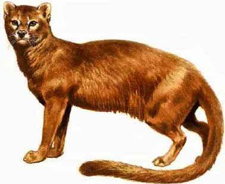
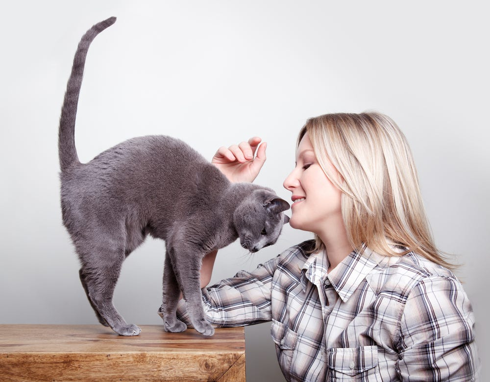
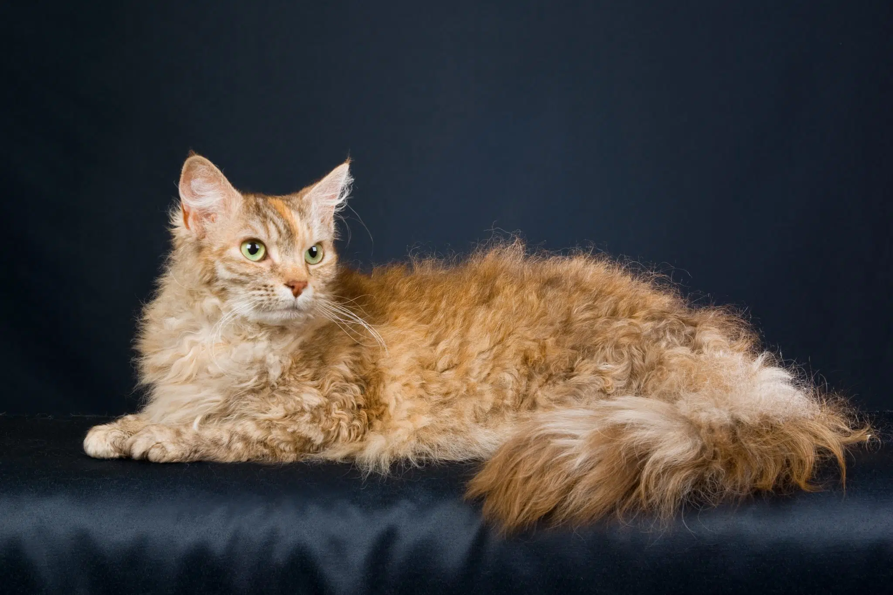

Evolutionary Timeline
The remarkable journey from wild predator to beloved companion spans millennia of gradual adaptation and selective pressures.

10,000 BCE
First Contact
Wild cats begin associating with human agricultural settlements in the Near East, drawn by abundant rodent populations around grain stores.

7,500 BCE
Early Domestication
Archaeological evidence from Cyprus shows cats were being transported by humans, indicating early stages of domestication and human-cat bonds.

3,000 BCE
Egyptian Reverence
Cats achieve sacred status in Ancient Egypt, where they're worshipped as manifestations of the goddess Bastet and mummified alongside pharaohs.

500 CE
Global Expansion
Cats spread throughout Europe, Asia, and Africa via trade routes and ships, controlling rodent populations and adapting to diverse climates.